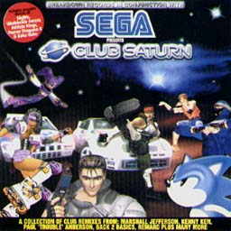
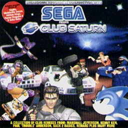

CLUB SATURN


CLUB SATURN

|
発売元：Suburban Base Records（ヨーロッパ盤） |
|
2枚組で、もう1枚は"SEGA FLASH vol.2"と名付けられたセガサターン用のデモディスク。 |
|
01. Nights ...EXPRESSIVE RECORDS - Drum & Bass Mix 02. Daytona Racing ...DUDERELLA - House Mix 03. Virtua Cop ...REMARC - Jungle Mix 04. Sonic 3D ...BALOUGA BOYS - House Mix 05. Athlete Kings ...KENNY KEN - Jungle Mix 06. Sega Rally ...D'CRUZE - Trip Hop Mix 07. Baku Baku ...DREAM TEAM - Drum & Bass Mix 08. Virtue Fighter ...MARSHEALL JEFFERSON - House Mix 09. Fighting Vipers ...BACK2BASICS RECORDINGS - Drum & Bass Mix 10. Nights ...RICHARD JACQUES - Ambient Trance Mix 11. Duel (Golden Axe) ...MR TIME (OF KROME & TIME) - Jungle Mix 12. Worldwide Soccer ...RICHARD JACQUES - Trip Hop Mix 13. Shinobi X ...REMARC & LEWI - Jungle Mix 14. Baku Baku ...ACORN ARTS - Hard House Mix 15. Fighting Vipers ...PAUL 'TROUBLE' ANDERSON - Avant-Garde Beats Mix |
|
・最初に戻ってみます!? ・関連CD＜海外編＞のページへ ・Music CDのページへ ・Sound Web Siteのトップページへ |